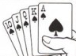
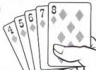
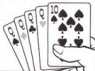
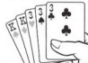
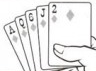
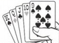
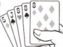
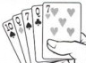
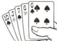
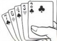

Usually in poker, the wrong call means losing a lot of money. Here, it means death.
SEE APPENDIX PK71 FOR POKER HAND RANKINGS.
The module will display a single face-up card.
You must push two of the buttons and one of the face-down cards in order to disarm it.
Use the given card to determine which of the four flow charts you should use.
Use the flow charts to determine your 5-card poker hand and press the appropriate button.
Your opponent will then respond. Use the two-way table to determine whether the response is the "truth" or a "bluff".
Your opponent will then make a bet. Use the betting rules to determine which of the four final cards you should press.
If you have NO HAND, press FOLD.
If you have A PAIR or TWO PAIR, press CHECK.
If you have THREE OF A KIND or A STRAIGHT, press MIN RAISE.
If you have A FLUSH or A FULL HOUSE, press MAX RAISE.
If you have FOUR OF A KIND or A STRAIGHT FLUSH, press ALL-IN.
Flow Charts
Ace of Spades:
Keep Talking and Nobody Explodes ModPoker
King of Hearts:
Five of Diamonds:
Keep Talking and Nobody Explodes ModPoker
Two of Clubs:
Bluff or Truth?
Starter card
Ace
King
Five
Two
Truth
Truth
Truth
Bluff
“Terrible play!”
Opponent Response
Bluff
Truth
Truth
Bluff
“Awful play!”
Truth
Bluff
Bluff
Bluff
“Really?”
Bluff
Bluff
Truth
Bluff
“Really, really?”
Truth
Bluff
Bluff
Truth
“Sure about that?”
Bluff
Truth
Truth
Truth
“Are you sure?”
Keep Talking and Nobody Explodes ModPoker
Betting Rules
$25 Bet:
If the first card is red and there is a lit BOB indicator, press the fourth card. Otherwise, if your opponent said "Awful play!" and the starter card was the Ace of Spades, press the first card. Otherwise, if there is an unlit FRQ indicator and the fourth card is black, press the second card. Otherwise, if there is at least one diamond and your opponent said "Really?" or "Really, really?", press the third card. Otherwise, if the fourth card is a spade and there are more than four batteries, press the third card. Otherwise, if the third card is a diamond and the second card is not a club, press the second card. Otherwise, if your opponent said "Are you sure?" and the starter card was the Two of Clubs, press the first card. Otherwise, if the starter card was the Five of Diamonds, press the fourth card. Otherwise, if the second card is a club and there is no RJ-45 port, press the second card. Otherwise, press the first card.
$50 Bet:
If your opponent said "Sure about that?" and the fourth card is a heart, press the first card. Otherwise, if there are no clubs and the starter card was the Two of Clubs, press the third card. Otherwise, if a heart appears anywhere above a spade and there are no diamonds press the fourth card. Otherwise, if the first card is a heart and the starter card was not the King of Hearts, press the second card. Otherwise, if your opponent said "Really, really?" and the first or second card are hearts, press the fourth card. Otherwise, if the starter card was the Five of Diamonds and there is a parallel port, press the first card. Otherwise, if there is a lit TRN indicator and there is at least one black card, press the second card. Otherwise, if your opponent said "Terrible play!", press the third card. Otherwise, if the digits of the serial number add up to less than ten press the first card. Otherwise, press the third card.
Keep Talking and Nobody Explodes ModPoker
$100 Bet:
If your opponent said "Really, really?", press the second card. Otherwise, if your opponent said, "Really?", press the fourth card. Otherwise, if there are no D batteries and the starter card was the Ace of Spades, press the first card. Otherwise, if the digits of the serial number add up to a prime number and there is at least one heart, press the fourth card. Otherwise, if a club and a spade appear and your opponent said "Sure about that?", press the third card. Otherwise, if a club and a spade appear next to each other, press the second card. Otherwise, if there is an unlit MSA indicator, press the first card. Otherwise, if there is at least one diamond, press the third card. Otherwise, if your opponent said "Awful play!", press the fourth card. Otherwise, press the second card.
$500 Bet:
If there is more than one club, press the third card. Otherwise, if the serial number contains a vowel and there is at least one spade, press the second card. Otherwise, if there are no ports and there is at least one heart, press the first card. Otherwise, if there are no red cards, press the fourth card. Otherwise, if your opponent said "Are you sure?", press the fourth card. Otherwise, if there are no lit indicators and the first card is a heart, press the third card. Otherwise, if there is at least one unlit indicator and the second card is a club, press the second card. Otherwise, if your opponent said "Really?" and there are no black cards, press the first card. Otherwise, if there is more than one D battery, press the third card. Otherwise, press the fourth card.
Keep Talking and Nobody Explodes ModPoker
Appendix PK71
Poker hands are ranked (strongest to weakest) as follows:

Royal Flush
Ten, Jack, Queen, King, Ace of the same suit.

Straight Flush
Five consecutive values of the same suit.
(N.B. Aces can be high or low but not both simultaneously).

Four of a Kind (Quads)
Four cards of the same value.

Full House
Three cards of the same value and two cards of another value.

Flush
Five cards of the same suit.
(N.B. In the event two flushes are held, the highest card wins).

Straight
Five consecutive values of any suit.
(N.B. Aces can be high or low but not both simultaneously).
(N.B. In the event two straights are held, the highest card wins).

Three of a Kind (Trips)
Three cards of the same value.

Two Pair
Two cards of the same value and two cards of another value.

Pair
Two cards of the same value.

No Hand
No matching values.
(N.B. In the event that two players have no hand, the highest card wins).